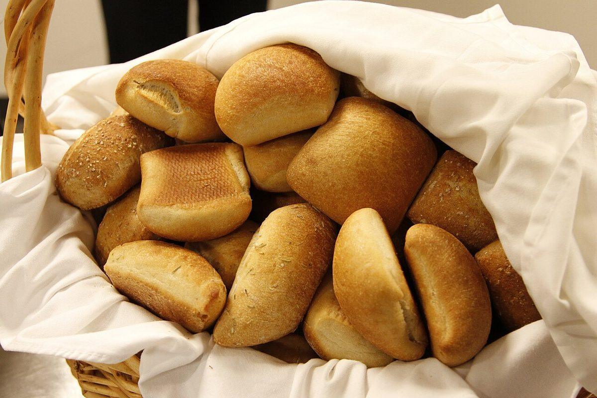
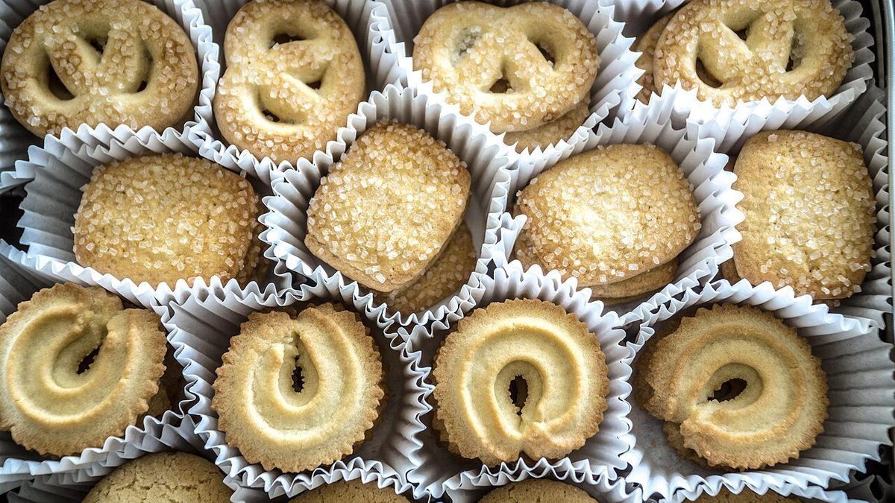

メニュー
メニューは準備中
商品や価格は確認でき次第、ご案内します。ここに並ぶ写真は、ページの見た目を伝えるためのイメージです。
写真イメージ
パンの写真(イメージ)



写真はパンのイメージです。お店で提供している商品を示すものではありません。



メニュー
商品や価格は確認でき次第、ご案内します。ここに並ぶ写真は、ページの見た目を伝えるためのイメージです。
写真イメージ

写真はパンのイメージです。お店で提供している商品を示すものではありません。
